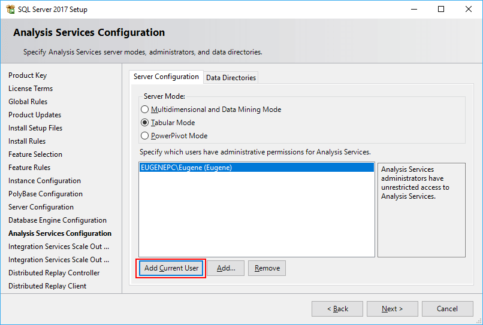

MS SQL Server доступен в различных вариациях. Прежде всего, это MS SQL Server Enterprise - полный выпуск, нацеленный на использование в реальных проектах. Именно он используется на различных хостингах и серверах баз данных. Однако он доступен только в платной версии (не считая триального периода) и стоит довольно приличных денег.
Для простых приложений также может хватить и выпуска Express: он бесплатный. К тому же у него есть преимущество - его можно ставить в качестве реального сервера и использовать в реальных задачах, однако он имеет урезанный функционал по сравнению с полной версией.
И также есть MS SQL Server Developer Edition. Это полнофункциональный выпуск, который содержит весь функционал, что и полная версия MS SQL Server Enterprise, только нацелена только для нужд разработки. В то же время эта версия не может быть использована для развертывания в качестве реального сервера на реальных проектах. Однако для изучения всей механики MS SQL Server эта версия представляет оптимальный вариант, поэтому именно эту версию мы и будем использовать.
Итак, установим MS SQL Server 2017 Developer Edition. Для этого перейдем по адресу https://my.visualstudio.com/Downloads?q=sql%20server%202017%20developer. При доступе может потребоваться учетная запись Microsoft. В этом случае надо осуществить вход с помощью учетной записи Microsoft.
Оставим языком по умолчанию английский и загрузим все файл iso. Так как загружаемый файл имеет расширение .iso, то после загрузки распакуем его и запустим программу установщика. Нам отобразится окно мастера установки:
Здесь выберем первый пункт "New SQL Server stand-alone installation or add features to an existing installation". Далее с помощью последовательности шагов нам надо будет установить опции установки.
Прощелкаем до пункта "Product Key". На этом этапе надо ввести ключ, либо указать один из бесплатных выпусков. Здесь мы указываем выпуск "Developer" и переходим к новому шагу по кнопке Next.
Далее надо будет принять лицензионное соглашение. И затем прощелкаем до шага "Feature Selection". На этом этапе предлагается выбрать компоненты для установки. Здесь отметим все компоненты, учитывая при этом объем свободной памяти:
В зависимости от выбранных компонентов увеличивается количество этапов установки, где надо выполнить какие-либо настройки. В моем случае выбраны все компоненты. Поэтому в дальнейшем рассмотрим тот случай, если выбраны все компоненты.
Далее на шаге "Instance Configuration" нам надо будет указать название и ID запускаемой сущности SQL Server.
Для имени указываем опцию Default instance, а для ID устанавливаем MSSQLSERVER. Это будет то имя экземпляра, по которому мы сможем обращаться к серверу из внешних приложений.
Затем прощелкаем последующие два шага с опциями по умолчанию до "Database Engine Configuration". С помощью кнопки Add Current User здесь добавим текущего пользователя в качестве администратора для сервера.
На следующем шаге "Analysis Services Configuration" также добавим текущего пользователя в качестве администратора для функции Analysis Services:
На следующих двух шагах оставим настройки по умолчанию. И далее на шаге "Distributed Replay Controller" аналогично добавим текущего пользователя
На всех последующих шагах оставим настройки по умолчанию и на самом последнем экране для установки нажмем на кнопку Install:
Спустя некоторое время MS SQL Server будет установлен.
Итак, мы установили SQL Server 2017, при этому назначили для него идентификатор "MSSQLSERVER". Следует отметить, что перед подключением к нему, надо убедиться, что он запущен. Для этого можно открыть окно служб:
Если он не запущен, там же в панели служб мы его может запустить, и после этого мы сможем с ним работать.